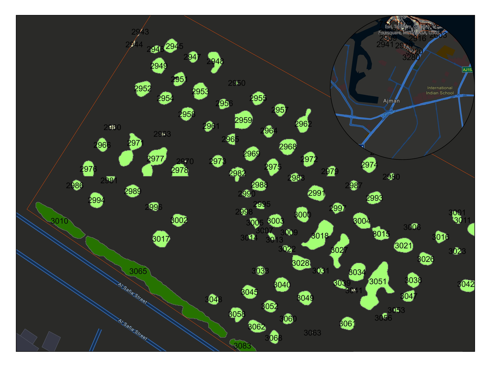
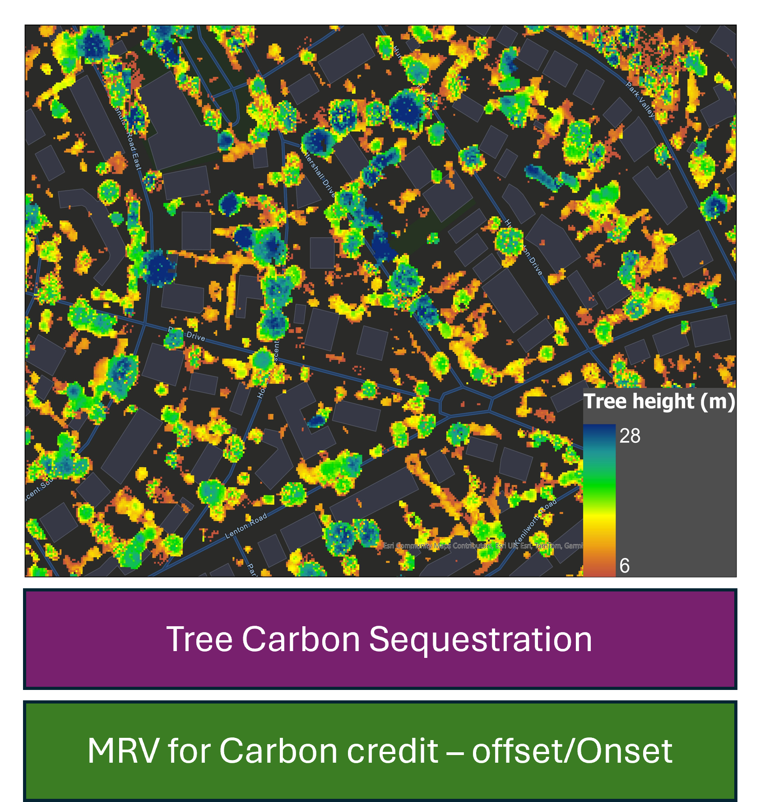

Ecological Asset Management System
See the Ecological Assets in your Landscape.
Gain a living, breathing digital twin of your ecological assets for unparalleled management and care.
Are You Managing Your Ecological Assets Blindfolded?
Municipalities, farms, golf courses, and large estates struggle to manage vast landscapes efficiently.
- How do you know which tree among thousands is stressed?
- How do you plan irrigation without wasting water?
- How do you turn a satellite image into a work order?
Intelligence for Every Leaf and Drop of Water
Our tool uses advanced AI on satellite and drone imagery to segment, identify, and monitor every asset.
- Capture & Digitize: Precise map of every tree & water body.
- Analyze & Assess: Automatic health scores & at-risk flagging.
- Act & Manage: Work orders sent to mobile devices.
Key Features
Precision Digitization & Inventory
Our AI assigns geotagged IDs to each tree, enabling time-series analysis and true ecological inventories.
Health Analytics & Risk Scoring
Plant health & soil moisture analysis detect risks early. Assets flagged automatically for proactive care.

Tree level Carbon Mapping
Estimation of tree height from LiDAR data and converting them to carbon estimates.
Integrated Task Management
Automatic work orders: “Inspect Tree T-0891”, “Check irrigation in Sector D” sent with map pins.
The Value of Intelligent Management
Reduce Costs
Target resources, save water, prevent large-scale losses.
Target resources, save water, prevent large-scale losses.
Save Time
Automate monitoring and field task delegation.
Automate monitoring and field task delegation.
Improve Sustainability
Data-driven decisions for biodiversity and resilience.
Data-driven decisions for biodiversity and resilience.
Built for Stewards of the Land
🌳 Urban Forestry
Manage city-wide canopies & canopy goals.
Manage city-wide canopies & canopy goals.
⛳ Golf Courses
Maintain greens & manage water features.
Maintain greens & manage water features.
🍇 Vineyards & Plantations
Optimize irrigation & harvest planning.
Optimize irrigation & harvest planning.
🏞 Large Estates & Parks
Preserve landscapes & heritage trees.
Preserve landscapes & heritage trees.